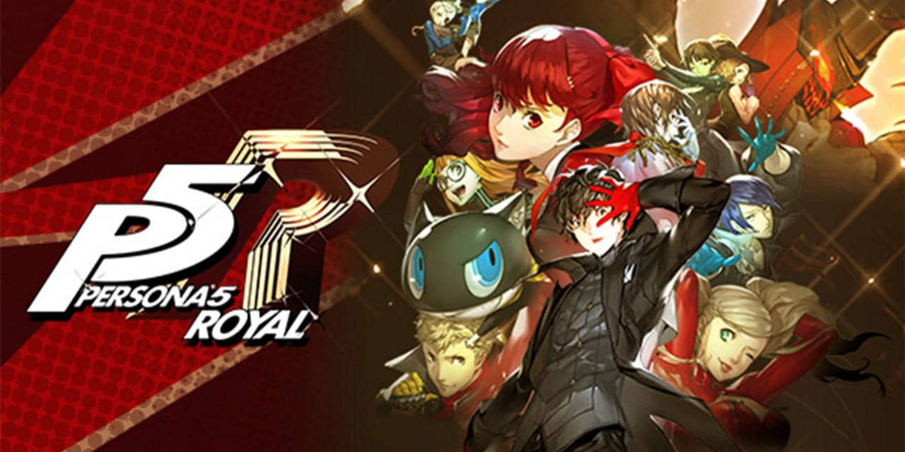

Parsnip's Reel Talk
Persona 5 Royal
Persona 5 Royal, has been a very long journey for me, taking me just over 200 hours to beat it, one of the few games that took me over 100 hours to beat, one of the only other games taking me this long is Persona 4 Golden. So, it’s clear that each of the persona games takes a bit of time to complete, but while on this journey I experienced ups and downs along with the characters and worked on building connections, that aided me on this long journey. My word was this a journey, many of my feelings I had for P4G (Persona 4 Golden) still apply for P5R (Persona 5 Royal), and my original opinions for this series has changed a little too.
As P5R is P5 plus some new added content such as a new dungeon and final boss, I will refer to the original final boss as the P5 final boss and the new boss as the P5R final boss.
Story, you are a second-year high school student that has had to move in to the big city due to getting expelled from your last high school due to having a criminal record. The reason for this criminal record is because you got arrested for assault, but I won’t be going deeper into that as I want to leave you with as little knowledge of the story’s plot as possible so you can enjoy it yourself. After moving into the big city, the complete opposite of P4G you soon learn you have the ability to enter another world, with is formed from people’s unconcise cognition, called the Metaverse. In the metaverse you will have to infiltrate a person’s ‘Place’. A Palace is the manifestation of a person’s distorted desires, and it’s up to you and your friends to find eths treasure, the source of the distorted desire and steal it from the palace’s ruler, in the hopes of making the palace ruler have a change of heart in the real world. So, it falls to you and your groups of friends to form the Phantom Thieves, to steal the hearts of criminals and reform society as a whole. My favorite character is Goro Akechi, I can’t talk about why he’s my favorite I did enjoy his arc throughout the game.
There was a point in of the of the later Palaces where the party has a little bit of a falling out which felt very forced, it was so dumb and took way too long to resolve and, even after it was resolved it felt like nothing change everyone was the same. This really did feel like a complete waste of time and it really soured the Palace, which did look really nice.
I did notice that the added Character Kasumi, did feel forced into the story at times during my time playing, it was clear due to how out of nowhere some of her encounters feel, which is the opposite of how I feel the inclusion of Dr Maruki who I felt fit into the story much cleaner than Kasumi, if you had told me Dr Maruki was in the base game then I could easily believe it due to how naturally he seemed to fit in the story.
I very much enjoyed my time with the story, I loved the build ups of each of the targets, and seeing the outcome of changing their hearts. I liked the villains they felt great as an obstacle for the characters to overcome. I loved fighting the final boss for P5, it really made me have to plan out my moves, which I really enjoyed, and the whole final boss was a joy to fight because of the buildup, the music and acting also played a big part in my enjoying, this also extended to the final boss for P5R which has multiple stages same as the final boss of P5 but also has a new version of the boss’ battle theme to go along with the second form which is just the boss’ original theme with lyrics, and how the story is done for the P5R final boss is really amazing, I catch myself looking it up on YouTube just re-experience it again.
For Gameplay, when you’re not in the metaverse you pass the time by hanging out with confidants or by doing tasks that increase one of your 5 social stats, which are needed if you want to max out some people’s confidants. When you increase a Confidant there are occasions where you will gain a useful skill for traversing a Palace easier, allowing the whole party to gain EXP or new skills for your party members. Many of these skills I got from the Confidants were very useful, the most useful was one that allowed me to go out in the evening even if I went to the metaverse, as going to the metaverse prevents you from going out in the evening. When traversing a Palace, you’re goal is to reach the treasure while avoiding detection from the enemies, if you do get detected by one of the enemies then the alert meter will increase, and once it makes out you will be kicked out of the palace for the day. There is a way to lower the meter and that is to sneak up on an enemy and ambush them, when you ambush an enemy you go in to a turn-based battle, there are some things different from your average turn-based RPG.
When entering a palace your mission is to first locate the treasure, once this is done next it to send a calling card you can hold of for this, till near the dead line but once you send the calling card that ends the day and pushes on to the next day where the game forces you into palace, so it’s important to make sure you’re prepared before sending the calling card as you will not be able to leave till you defeat the boss. When infiltrating the palace, I did feel that the game did get very handholding with some of the puzzles, as I know how to solve them and even after I learnt how it worked the characters still stopped me and tell me how the puzzle works, which did irritate me a little, but I was able to skip over their dialogue.
In P5 and P5R palaces are not procedurally generated, so every palace will be the same no matter how many times you leave and enter, the procedurally generated area is left for a place called mementos which is described as everyone’s palace, or the palace for society, this is where you will be going most of the time as beating a boss of a palace locks that palace off for the rest of the game. throughout the game you will be given requests which will see you enter mementos to change the heart of someone causing trouble in the city, it’s important to do these as these requests are the only way to level up one of the confidants. Also, Mementos starts opening up more and more as you continue through the story, which in turn opens up more and more requests. I did mention that one character only levels up by completing request but there are other confidants that will require you to tackle a request form them in order to continue increasing their confidant.
If you hit an enemy with an attack they are weak to you get something called one more, which gives that character an extra turn, and you can decide to do something called a baton pass which increases the damage of the ally you passed to and this can be repeated up to 3 times, leading to large amounts of damage. If you knockdown all the enemies using their weaknesses, then you get to do a hold up and here you get three options, an all-out attack dealing large amounts of damage to the enemy, and if it kills all the enemies and ends the fight then you get a nice splash card of the character that initiated the hold up, Talking to the enemy which opens up three new options, demanding money from the enemy, demanding an item or trying to convince the enemy to join you as a persona (I’ll go more into this in the next section), and the third option from hold up is to just cancel it and go back, which allows you to continue the baton pass if you hadn’t maxed it out yet.
Personas, these are how you use your skills, every party member has once except the main character he gets multiple personas, the main way to get personas is by talking to them during hold up but there comes a point where you’ll need stronger personas. To get stronger personas you’ll have to fuse the personas you’ve already got, through fusion the new persona can inherit some of the skills from the two personas you sacrificed. When making personas the confidants you have been increasing also play a part here as each persona is tied to one of the confidants represented by a tarot card, and the higher the confidant is for that tarot card the more Exp you get for making that persona.
The difficulty for this game, I found to be easier than P4G, I had to put the difficulty to the max, Part of this could be because I was using a DLC persona, as all the DLC for persona 5 is free for P5R, and each of the DLC personas can be obtained for free and I was given items that would increase my EXP gain by 15% which made it easy to over level my time, if you want a challenge I would say don’t use the DLC items but it’s up to you if you want to use them or not I did and I noticed that I had an easy time with this game, I was also given items for increase money gain and some null element items, which did help with fighting the reaper who would have been very difficult to fight without, even with the items the reaper still put up a fight.
Music, the music is again outstanding, a real highlight of the game, I always get pumped when doing infiltrating a palace after sending the calling card, and the final palace having a different infiltration theme after sending the calling card hit so much harder than the original theme. The song played in the evening was always relaxing, and being able to listen to Swear to my bones which I believe to be the best song in the whole soundtrack as, I’m able to just sit back and listen to it for hours and drift of to sleep because of how relaxing that one song is more so than the evening theme. I can not stress enough how much I love the soundtrack for this game.
To close out, I loved this game from beginning to end there were some hiccups now and then but nothing that lowered my opinion of the overall game, I loved playing this game, I adored getting to know these characters, and helping them with their struggles, the twit and turns in the story kept me upon my toes, the gameplay though easy still was very enjoyable and fighting the final boss of P5R really made me put everything I learnt into practice. The story really helped amp up each of the scene, and some of the best music I’ve heard for a game ever. This is a game I can easily recommended this game to anyone as the story is great the characters are lovable, and the climax to the story is really nice. If you have a PS4 then I say get Persona 5 Royal, you can’t really go wrong with it.


About
I am Parsnip and this is my Review site, where I review Films/TV shows, Gamnes and books. THis site is being run by myself only for now, so new uploads will be slow to come out